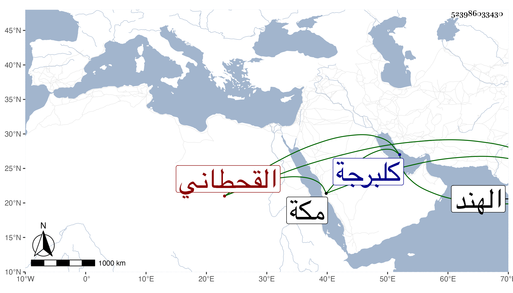

0902Sakhawi.DawLamic.ITO20230111-ara1.EIS1600.523986033430
Biography ID: 523986033430
713
خلف بن حسن بن مهيوف بن ناصر بن مقدم القحطاني ملك البحار القائم بدولة الشهاب أبي المغازي أحمد متملك كلبرجة من الهند . ولد في حدود سنة تسعين وسبعمائة . ذكره المقريزي في عقوده مطولا وبالغ في الثناء عليه وإنه كان جوادا يحب العلماء والأشراف والفقراء ويواسيهم أعظم مواساة حتى بالارسال لمن يعلمه منهم بالأماكن النائية سيما أشراف بني حسن ولذلك لم يزل مظفرا بحيث انه ما توجه لأمر إلا وظفر به مع صيانته ومنعه الفواحش . قال وبالجملة فهو أحد أفراد العالم في زماننا لما اشتمل عليه من الدين والورع والكرم والشجاعة ونفوذ الكلمة ووفور الحرمة وبسط اليد في الدول بحيث إنه لما مات سلطانه الشهاب أوصى به ابنه أبا المظفر شاه أحمد وقال إن أردتم قيام ملككم فلا تغيروا على الملك خلف فامتثل وصيته ، وصار له من المكانة المكينة ما لم يزل له وأقامه فيما أقامه فيه أبوه وأنشد من نظمه في قصيدة :
| وإن زار داري زائر زار داره | دنانير تبر خلفها الخز يحمل |
ولم يؤرخ وفاته لأنه إنما قتل بعده بزمن وكان ممدحا مقصودا بذلك من شعراء مكة وغيرهم
